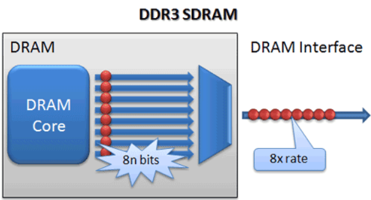

Net zoals bij DDR2 wordt data overgedragen op de stijgende én de dalende flank. Om de troughput te verhogen wordt de prefetch buffer opnieuw verdubbeld. Dit betekent dat als we 1 cel adresseren we er 7 aanliggende ophalen: 4 op de stijgende en 4 op de dalende flank. Ook de kloksnelheid is min of meer verdubbeld: DDR3 komt in snelheden van 400 MHz tot 1066 MHz).

Ook het voltage laat men zakken naar 1.5V ten opzichte van 1.8V (DDR2). Dit heeft men uiteraard kunnen bekomen door de afstanden tussen de verschillende cellen te verkleinen. Als gevolg heeft dit dat DDR3 energiezuiniger is in vergelijking met DDR2.
Als bijkomend voordeel heeft dit dat de bitdensiteit (het aantal bits dat opgeslagen kan worden per mm²) groter is ten opzichte van de vorige generaties. DDR3 RAM werkt dus sneller dan DDR2 en heeft een grotere geheugencapaciteit.